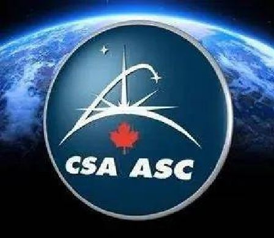

安省滑铁卢一家净水公司发明一种新方法，可将月球上土壤中的水份提取和净化为饮用水。它已成为加拿大太空署(Canadian Space Agency，图)的「Aqualunar Challenge」8名准决赛入围者之一。有关项目旨在寻找技术将月球水冰转化为饮用水，相关技术将用于日后的探月任务。
WaterPuris技术总监梁先生(Robert Liang，译音)透露，该公司设计一款太阳能加热圆顶装置，可使月球土壤中至少70%水份凝结并变成水蒸气，再净化为饮用水，藉此让月球上食物生长，以及制造火箭推进剂。他解释说，电解过程可用纯净水生产氢气和氧气，而氢气可作为燃料，氧气则用于维持生命系统，而尽管月球上没有下雨，但具体证据表明，月球上的水比大家想像的要多。
梁氏称，有关技术必须可在月球低重力一样的环境下进行测试，如国际太空站，而测试将在未来数年内进行。他又说，月球并不是唯一需要净化食水的偏远地区，在加拿大，原住民大多居住在偏远社区，跟他们建立联系并开发新思维方式为这些农村地区提供食水至关重要，他希望研发一种自动化并能自给自足的蒸馏技术，以应对需要较少维修保养的挑战。
加拿大太空署有关挑战项目研究员哈伯斯(Vivian Harbers)指，评审员寻找创新方法，能够去除污染物，而且「适合在月球表面运作，这当然跟在地球上运作迥然不同」。他又说，净化水将令更雄心勃勃的太空任务可望实现。
「Aqualunar Challenge」项目是由加拿大太空署跟枢密院的影响加拿大计划合作提出，在今年1月开始，加拿大创新者则于4月提交申请。哈伯斯称，该项目反应热烈出乎意料，评审员几经辛苦精挑细选该8个准决赛入围者。
该项目第一步是创作概念设计，申请者须解释其解决方案如何满足挑战目标、任务场景和评审准则。每位准决赛入围者将获得2.25万元补助金，以资助创制原型关键组件，以便参加下一阶段比赛，并于明年春天淘汰4位选手。
每位决赛入围者将获得10.5万元资助，在10个月内提交和测试原型品。大会将于2026年春天公布最终获胜者，他将获得40万元奖金。
除了加拿大之外，英国也举办类似项目，但哈伯斯说，两地项目并不相同，从某种意义上说，奖金由他们各自负责，而每个阶段各有不同目标，至于加拿大的准决赛入围者和英国决赛选手将获准合作。